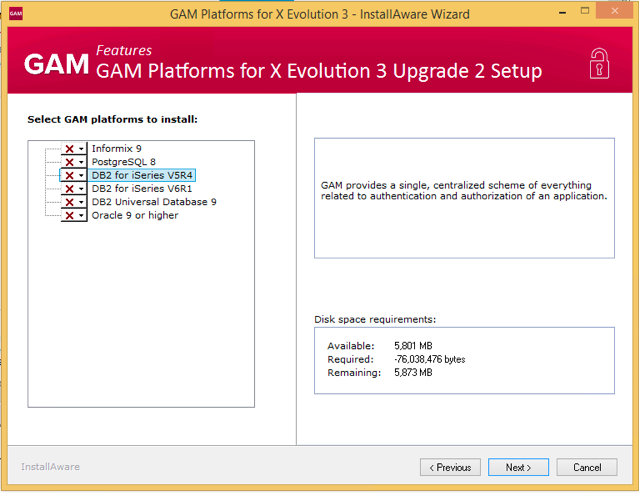

GeneXus Access Manager platforms are a set of external executable files and libraries (.jar, .rb. and .dll files) which implement GAM and all the GAM API.
The GAM external objects consolidated in the KB when GAM is activated (Enable Integrated Security property is set to TRUE) allow accessing the GAM API. The mentioned external libraries implement the GAM API. Those libraries are dependent on the platform used (SQL Server, Mysql, etc) and are required for using GAM at compile and execution time.
The GAM platforms are also needed during the F5 process: connecting to GAM database, GAM tables creation, GAM metadata initialization, GAM Applications Registration process and the generation of Automatic Permissions generated by GeneXus.
There are requirements that must be met by the Genexus applications to be successfully compiled. One of them is to reference the appropriate GAM platform libraries depending on the generator and DBMS used.
In runtime, the GAM platform libraries need to be located in the web application.
Database Requirements
| DBMS | Versions | Other |
|---|---|---|
| DB2 Universal Database | 8.0 or higher | The database must be created with codeset UTF-8 (USING CODESET UTF-8 in the Create Database sentence) |
| DB2 UDB for iSeries | ||
| SQL Server | 2008 or higher | |
| MySQL | 5.0.3 or higher | Do not set lower_case_table_names to value '2'. Do not set init-connect='SET NAMES utf8'. |
| Oracle | 9.x or higher | |
| PostgreSQL | 8.1 or higher | |
| SAP Hana DB |
The GAM platforms are distributed for all the possible combinations: Mysql, SQL Server, Oracle, Informix, DB2 UDB, DB2 iSeries and Postgresql for Java and NET generators. In the case of .Net Core Generator, only SQL Server and Mysql are supported.
By default, when Genexus is installed only two of these platforms are installed: SQL Server and Mysql. These are named the standard GAM platforms.
If you want to use a DBMS other than SQL Server or Mysql, the GAM platform corresponding for this DBMS needs to be installed using the gamplatforms.exe setup located under Genexus installation folder Library\GAM\Setup.
The gamplatforms.exe is a setup which detects any other previous versions and suggests to install the new upgrade or build of the platforms.
Working in Genexus IDE, when you change the GAM data store and there is no platform installed for it, the gamplatforms.exe setup launches automatically in order to help the user to install the required platform.

You need to keep updated with the GAM platforms version. When installing a new Genexus upgrade or version it is mandatory to update the GAM platform for the upgrade or GeneXus version. This is automatically controlled in the GeneXus setup where you are asked to upgrade the GAM platforms which are already installed.